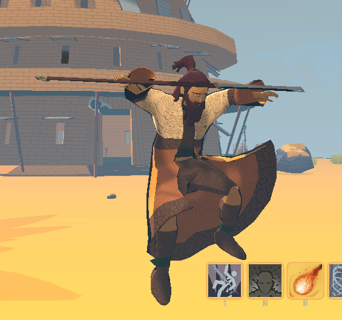
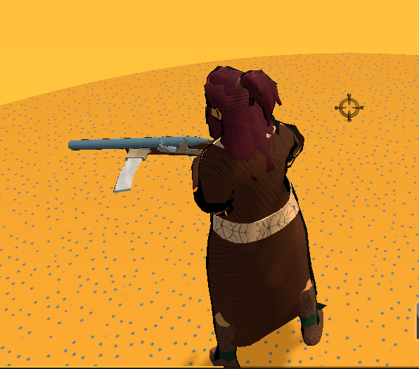
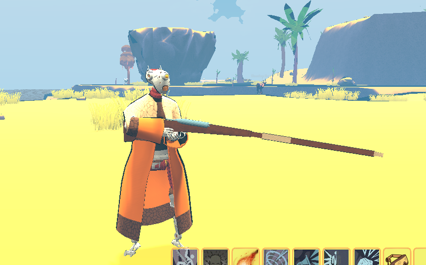
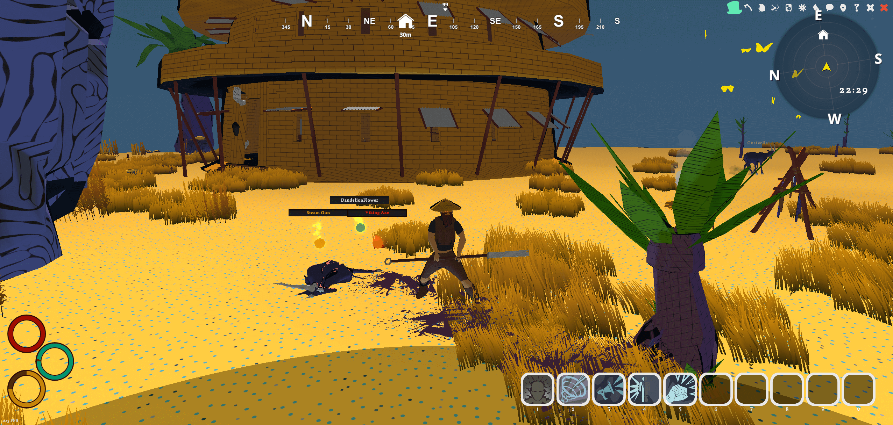
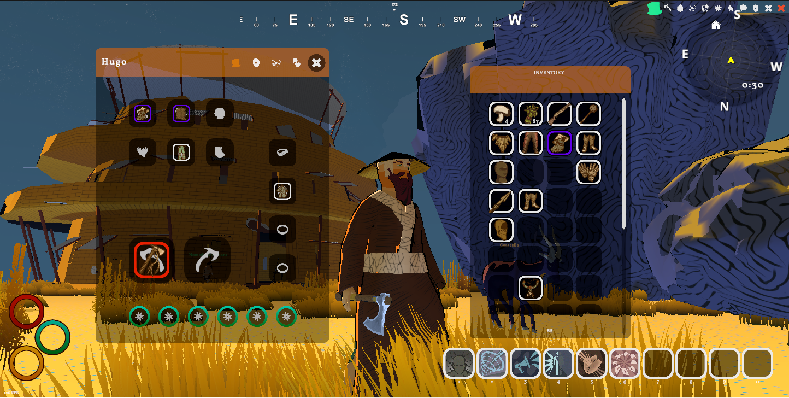
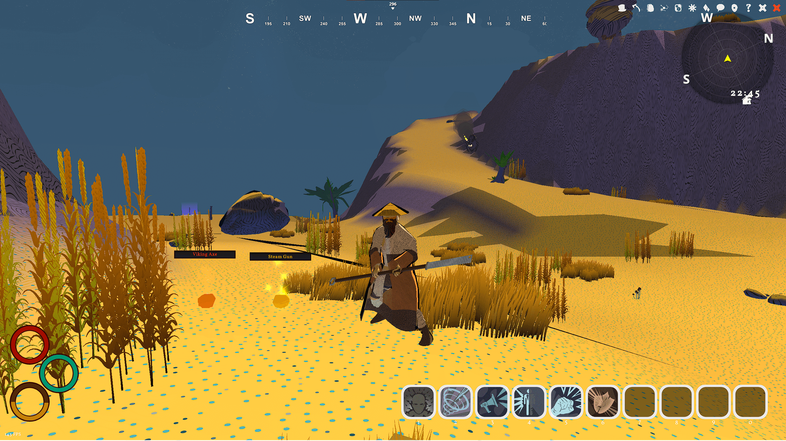

Gamedev log 8# - Timeshift
It’s been a while since the last update, but that doesn’t mean nothing’s been happening! 🙂
Update on the New Engine Version
Preparation for alpha testing in the first quarter of 2024
Hair and substance physics

Inclusion of all modeled weapons into the game (+ some attacks and work on animations)
Remodeling of the opening scene

Addition of over 25+ character creation backgrounds influencing character stats and story
Revamp of resource acquisition in the game.
New Robot Race
Introduced a new race of Robots, divided into two subgroups - Slaves and Pirates. Robots become pirates after encountering anomalies that can cause strange behavior and self-awareness. They involuntarily become prey to hunters of these “malfunctioning” technologies, initially created by the Imperial faction with the primary purpose of serving as slaves to operate steampunk technologies, engines, and trains. Those who manage to escape are called Pirates, as Imperials try to portray them as dangerous. 
These robots live secluded lives in desert and marshy areas, inaccessible to ordinary people from large cities, leading a simple life full of faith in something that gave them their own sense of confidence. However, they are unable to harness this energy in its natural form, which in this world is referred to as various names… magic, anomalies, or mana.
Their strengths lie in natural talent for work, science, and technology. They also possess the greatest endurance and resilience of all races. However, they face limitations in carrying certain items that are not natural for robots or possess magical abilities that may irritate them.
Progress and Challenges
As deadlines loom and a new season of Diablo hits, managing social media and personal life alongside work becomes challenging. Despite this, progress continues, albeit at a slower pace. The plan remains to launch the game into testing mode soon. Thus, a significant amount of time has been dedicated to optimizing scenes and creating better terrain. Another focus has been the complete overhaul of the UI to resemble Zelda games.
Every day brings new ideas, but there’s a need to prioritize completing the basic framework, especially the game loop with a few quests and maybe a dungeon. Even so, completing at least the first island seems like six months of work, and more time is hoped for. 
Feedback on the New UI
What are your thoughts on the new UI?

Looking Ahead
Plans include completing the dungeon, adding quests, and examining monster AI to finalize the first island for the upcoming alpha testing phase, or rather, a pre-alpha!

Recent Additions
Recent additions include:
Implementation of a GORE system - a blood system that affects everything it lands on
Ragdoll system - some monsters fly off a bit after death, adding to the experience
ARPG loot drop system

Mouse/cursor toggle system “F” to help players better collect items on the ground or interact with elements in the game.
 As progress continues, stay tuned for more updates and insights into the development journey of this exciting project!
As progress continues, stay tuned for more updates and insights into the development journey of this exciting project!